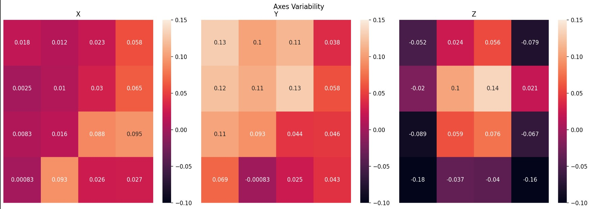
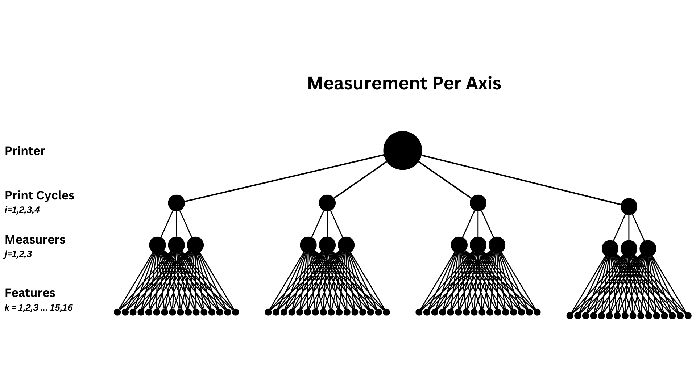
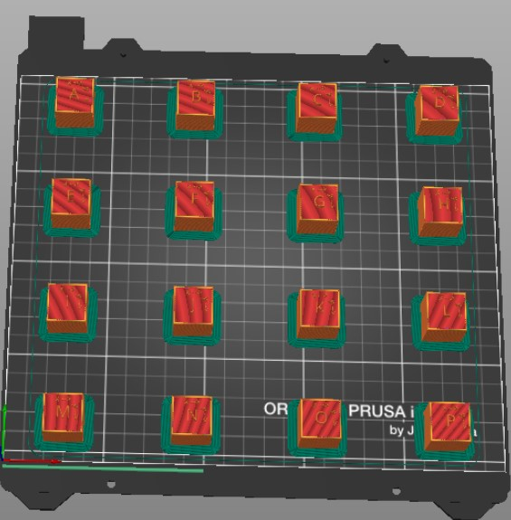

2024
3D Printing Variability Study
As part of a team, I designed and executed an experiment on variability in 3D-printing as part of our research in mathematical modelling. The experiment accounted for variance caused by print bed location, print axes, variation between print jobs, and variation caused by measurers. By running an ANOVA analysis, we were able to identify print bed location as a key factor in part variability, followed by print axis (x, y, or z).
Heatmap Placeholder
Heatmap of variation across print axes
assets/img/3d-printing-variability-study/axes-variation-heatmaps.jpg

Diagram placeholder
Diagram: measurements per axis (printer, print cycles, measurers, features)
assets/img/3d-printing-variability-study/collection-map.png

Screenshot placeholder
Print bed layout with 16 test parts
assets/img/3d-printing-variability-study/cube-print-plate.jpg
